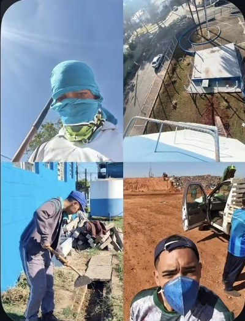
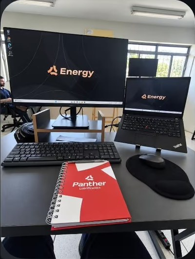

Primeira vaga em tech
“Após 5 meses de Acelera, sem nenhuma experiência na área tech, eu saí daqui… pra cá.”
Aluno AceleraDev · se candidatou a centenas de vagas desde jan/2024 até entender como se posicionar.